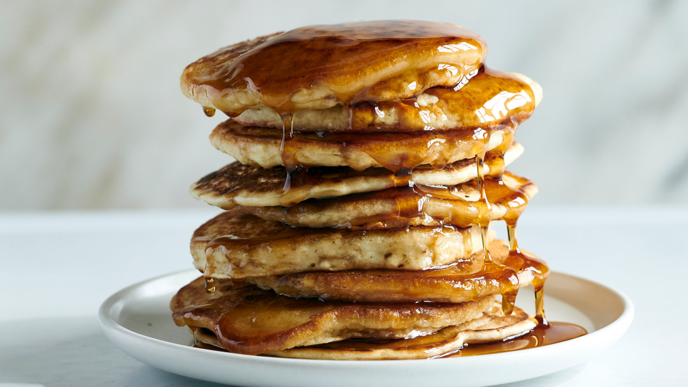
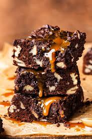

Veggie Burger

A homemade substitute for hamburgers, if you ever have a veggie at a party or barbeque. Good, even without bun!
Vegan Pancakes
A cinch to make and tastes wonderful, if you like the taste of Baking Powder. My skeptical parents couldn't believe these were vegan. Try with white and whole wheat flour. Excellent with some maple syrup. I'm pretty sure I stumbled across this one on vegweb.com
Vegan Brownies
My sister used to bake these every day to sell at a cafe at school. I often bring these to vegetarian/vegan potlucks because they are quick and everyone seems to really like them.